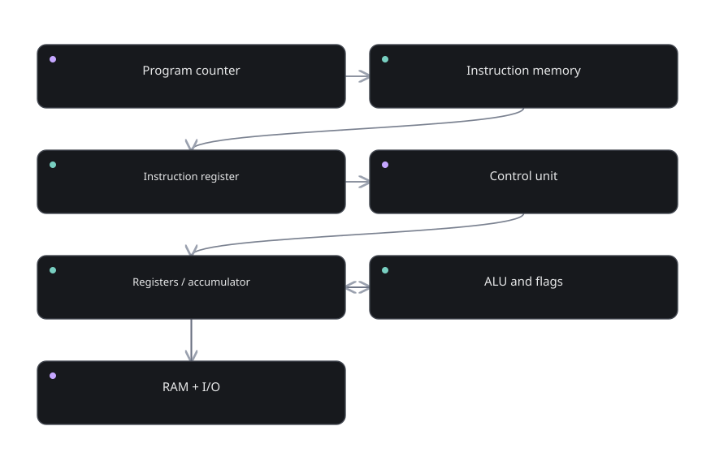

Lesson 05.05 · From gates to an ALU
The arithmetic logic unit
How does a processor choose ADD or AND?
The question
Do not memorize the diagram immediately. First decide what each arrow must mean. How does a processor choose ADD or AND?
An ALU computes arithmetic and bitwise results and selects an output using operation control bits. This is the small idea we need before we can build anything more complicated.
Suppose you have no specialized computer vocabulary yet. Rather than naming a part and demanding that you remember it, define its job. What information exists at the input? What outcome must be produced? Can we state the rule so precisely that a circuit could carry it out?
That is our starting point here. The question is not how to memorize the diagram. It is why this part has to exist and exactly which problem its presence solves.
A picture you already understand
A workshop has several tools but only the requested tool sends its result to the output tray.
Use the analogy only as an entry point. A physical circuit does not need imagination, awareness, or a little operator inside. It needs an arrangement of connections that reacts predictably to the values presented.
Whenever the analogy becomes misleading, come back to the stricter engineering rule: An ALU computes arithmetic and bitwise results and selects an output using operation control bits.
Notice what we have deliberately not assumed: an operating system, a programming language, or a modern laptop. We are still establishing one small behavior that later components can depend upon.
Build the idea
Our unit of reasoning is the ALU circuit. For this kind of system, pay attention to bit slices, carry path, operation select, result. These are the things you can observe or write in a trace table.
An 8-bit ALU might support ADD, SUB, AND, OR, XOR and pass-through operations.
That explanation is the mechanism, not merely a metaphor. You should be able to point to an input, explain what rule is applied, and determine exactly which state or output changes.
The arithmetic logic unit
An ALU computes arithmetic and bitwise results and selects an output using operation control bits.
Useful test: Check the least significant bit, every carry transition and the final flags.
Why it is designed this way
The immediate requirement is simple: the rule must be repeatable. Given the same relevant inputs and the same previous state, a deterministic implementation should produce the same defined result. That makes the block useful as a building material.
The next requirement is composition. A later component should not need to understand every internal detail. It should rely on the outputs and timing contract provided by this component.
A correct gate-level circuit still depends on settling time and output selection.
Walk a value through the machine
A diagram becomes much easier when we trace a specific case rather than a vague general statement. Here is a concrete example to hold in your mind:
An 8-bit ALU might support ADD, SUB, AND, OR, XOR and pass-through operations.
- Identify the input or starting state. Name the signal, number, address, or instruction involved. Where did it come from?
- State the rule precisely. Do not say “the computer knows”; say which selection, comparison, arithmetic step, storage event, or interpretation must occur.
- Follow the transformation. An 8-bit ALU might support ADD, SUB, AND, OR, XOR and pass-through operations.
- Find the destination. Does a register capture a value? Does a gate merely present an output? Does an address select stored data? Keep these actions separate.
- Verify against the intended behavior. Check the least significant bit, every carry transition and the final flags.
A reliable trace always distinguishes the value being handled from the place carrying or storing it. This will become increasingly important when an address, an instruction, and ordinary data are all represented by patterns of bits.
Read the diagram
Think of each box as a behavior with a defined responsibility. Arrows show the intended flow of data, control, or state changes. The diagram is a simplified logical picture rather than a literal photograph of silicon layout.

Reading exercise: Point to the first block and explain what value it can provide. Follow an outgoing arrow. Ask whether the next block transforms the value, chooses among values, or stores the value. Repeat until you reach an observable result.
For a stateful path, remember that a feedback arrow means the future may depend on an earlier output. For an arithmetic path, remember that each bit can have a place value. For control, remember that a command is only useful when it drives concrete enables and selectors.
What this does not mean
A tempting wrong assumption
ALU is not a complete CPU; it lacks instruction sequencing, memory and storage.
This is worth checking because beginners often jump from a correct simple example to an overly broad rule. The simple model is deliberately limited. It should remain precise inside those limits.
To see the boundary, ask: what is the bit width, which signal is interpreted as control, and whether we are talking about an instantaneous combinational output or a stored state? Those details prevent a surprising number of errors.
Real hardware also has nonzero propagation delay, physical limits and implementation choices. Our abstract diagrams ignore these details only where they are not necessary to explain the behavior.
Explain it back
Imagine explaining this topic to someone who has never opened a computer. Your explanation should fit in a few sentences, yet it should not hide the actual mechanism behind words like “magic” or “automatically”.
Start with An ALU computes arithmetic and bitwise results and selects an output using operation control bits. Then use the concrete case: An 8-bit ALU might support ADD, SUB, AND, OR, XOR and pass-through operations.
Finish with the limitation: ALU is not a complete CPU; it lacks instruction sequencing, memory and storage.
That three-part explanation — idea, mechanism, limitation — shows much deeper understanding than simply remembering an acronym.
Try it yourself
Create a three-bit operation code table for six ALU actions.
Write down the expected result or sketch the signal flow before revealing the guidance. If you cannot do it without rereading, that is useful feedback about what to revisit.
Reveal the reasoning method
Begin from the exact starting input or stored state. Identify bit slices, carry path, operation select, result. Apply only the transformation described in this lesson: An 8-bit ALU might support ADD, SUB, AND, OR, XOR and pass-through operations. Then validate your outcome. Check the least significant bit, every carry transition and the final flags.
The key is not how quickly you answer. It is whether each arrow or state transition in your answer has a clear reason.
You can return to Part 05 overview or open an interactive laboratory to test related hardware ideas.